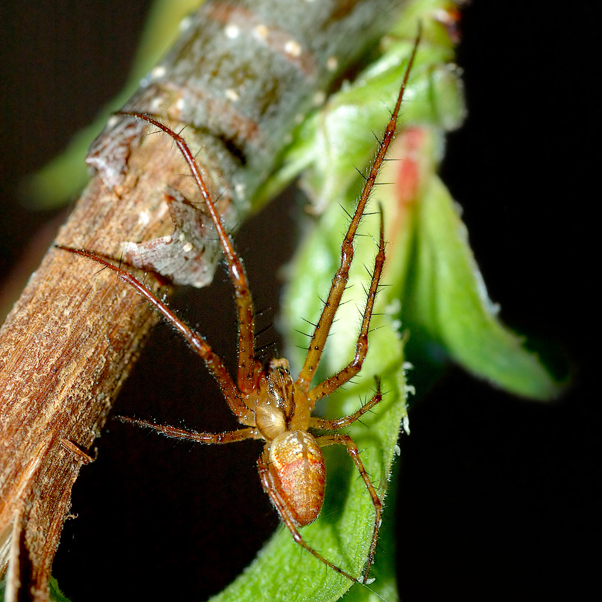

Изображение дня
Паук Metellina mengei [англ.] (лат. Metellina mengei) из семейства пауков-тетрагнатид
В этот день
27 сентября
- 1529 год: — Сулейман I "Сулейман Великолепный" осадил Вену.
- 1821 год: — Мексика получила независимость от Испании.
- 1822 год: — Жан-Франсуа Шампольон объявил о расшифровке Розеттского камня.
- 1829 год: — дерптский профессор Паррот первым поднялся на Большой Арарат (на илл.).
- 1905 год: — в редакцию журнала Annalen der Physik поступила статья Эйнштейна с уравнением E = mc².
- 1940 год: — Германия, Италия и Япония подписали Тройственный пакт.
- 1977 год: — первый ток дала Чернобыльская АЭС — первая атомная электростанция Украины.
- 1997 год: — последний сеанс связи с аппаратом Mars Pathfinder, находившимся на поверхности Марса.